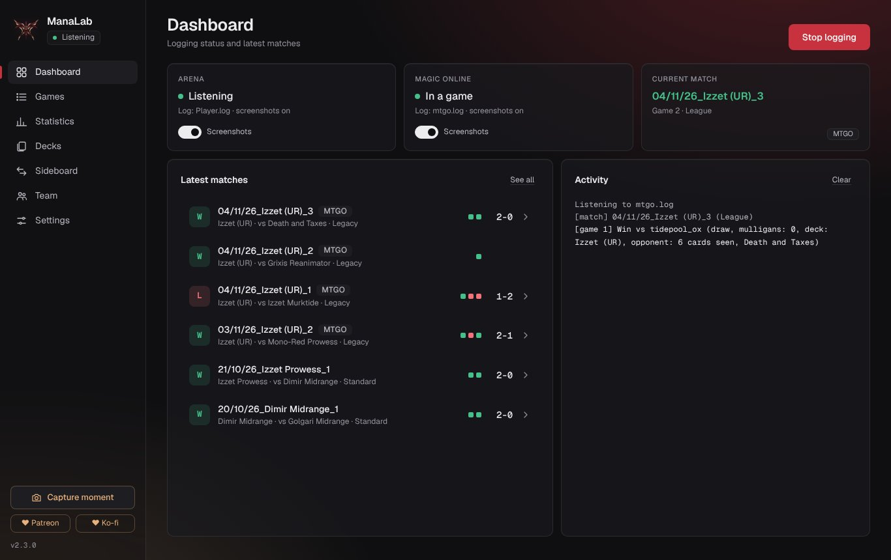
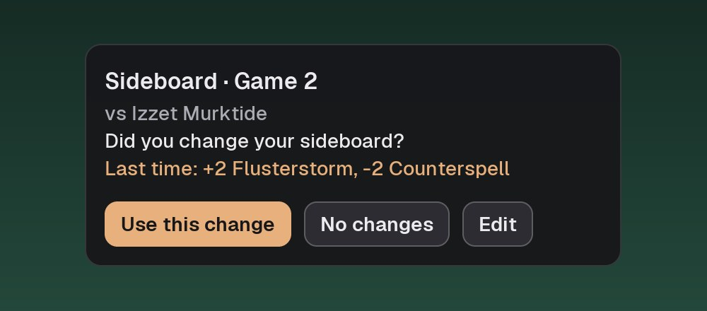
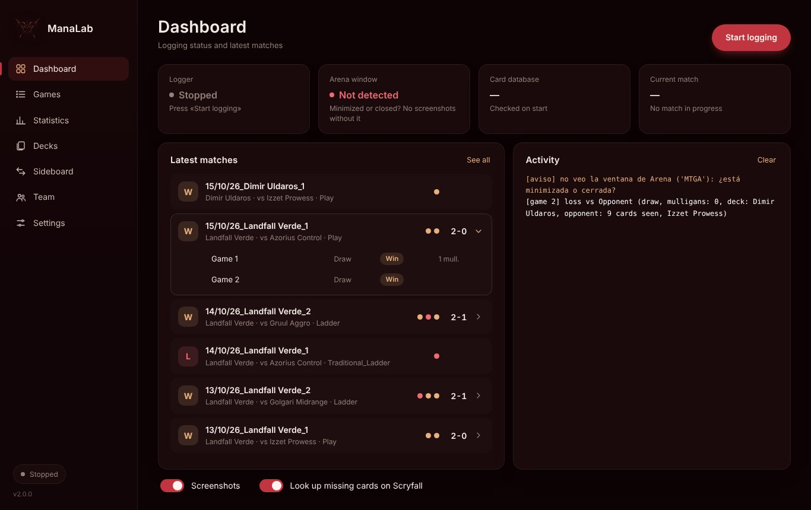

Every Arena and Magic Online match, logged on its own.
ManaLab reads the Arena and Magic Online logs while you play and keeps your hands, mulligans and the opponent's deck. Then it shows where you win and lose.
Version 2.3.0 · ZIP · nothing to installIs it safe? Check it yourself →
- Free, no accountThe app is free. Only the AI analysis is paid.
- Your data, on your PCGames, screenshots and statistics stay in a folder on your computer.
- It only reads the logsIt doesn't modify the game, read its memory or connect to its servers.
- You can check itEvery version is scanned on VirusTotal before release. How to check it →
Three things you'll check after every session
Your opening hand and every mulligan, with a screenshot
ManaLab keeps the hand you were dealt, the one you kept and a screenshot of each decision. Nothing to write down.
Where you win and where you lose
Win rate by matchup, by deck and by going first or second, with each game's real format.
Every game, replayed step by step
Go through the game turn by turn with the real cards and mark the key moments.
Now for Arena and Magic Online

Arena and Magic Online, side by side
The Dashboard shows the state of each game and your latest matches, with a small MTGO tag on the ones you played in Magic Online.

Confirm your sideboard in one click
Magic Online doesn't send your sideboarded list in time, so between games a small panel asks whether you changed it: use last time's change, say there were none, or open the editor.
Everything you'd note down after each match, done for you
Matches and games
Each Bo3 is one row with its score (2-1, 1-2…) that opens to show every game: play or draw, result and mulligans.
Hands and screenshots
Your opening hand, the hand you kept and screenshots of the key moments. Press F8 or the button over the game to save any moment you want and add a note to it. Screenshots are saved on your PC and can be turned off in Settings.
Opponent's deck
It compares the opponent's cards with the most played decks of the game's format and names the closest one. The meta lists update every 3 days.
Statistics
Match and game win rates, streaks, last days, and breakdowns by mulligans, play/draw, deck and opponent archetype.
Your decks
Each list you play with its win rate. Sideboard variants are grouped under the same deck, and you can rename them. In Magic Online, decks are named by their colors.
AI loss review (subscribers)
Subscribers get an AI analysis of every lost game: what went wrong, where you could have played better and what to try next. Subscription: 5 € per month on Ko-fi.
Overlay while you play
A separate window next to the game, in Arena or Magic Online, with your deck's remaining cards, the opponent's cards seen so far and the turn. It only shows public information or what can be worked out from what has been played. In Magic Online it can show less when the log has no table state.
Sideboard guide
Per matchup, what you brought in and took out in your own games and how it went, so you stop sideboarding from memory.
Coach and team
Error tags and notes on each game, matchup tables and a report for your coach. Team mode shares your games, screenshots and notes through a common folder, and your coach sees each game in full, replay included.
Built to review, not to fill in

Screenshots with sample data.
From the Arena and Magic Online logs to your history
With «Detailed Logs» on, Arena writes every game to Player.log. Magic Online writes its own log, mtgo.log, with nothing to turn on. ManaLab reads them as you play and turns them into matches you can review.
[UnityCrossThreadLogger] GreToClientEvent
{ "type": "GREMessageType_MulliganReq",
"systemSeatIds": [1] }
[UnityCrossThreadLogger] GreToClientEvent
{ "gameInfo": {
"matchState": "MatchState_GameComplete",
"gameNumber": 3,
"results": [{ "result": "ResultType_WinLoss",
"winningTeamId": 1 }] } }Study your games and work with your coach

A session report for your coach
Press «Prepare session» and pick the games: you get one file with hands, key moments and notes, to review or send to your coach.

Coach tags and trends
Your coach tags mistakes per game or per step, and «What repeats the most» shows how each one evolves over 30 or 90 days, or your whole history.
Screenshots with sample data from Arena.
Three steps, just once
Download and open
Windows 10 or 11. Unzip the file and open ManaLab.exe. Nothing to install.
Version 2.3.0 · ZIP · other versions
Before unzipping, right-click the ZIP › Properties › tick Unblock › OK: that way Windows neither shows «Windows protected your PC» nor blocks the program's files. If the warning still appears, click More info › Run anyway.
Already have ManaLab?
Only needed on this first download: later versions install from inside the app with no warning.
Already on 2.1.0, 2.1.1 or 2.1.2? Update by hand one last time: unblock the ZIP as described above and unzip it over your ManaLab folder (your games and settings are kept). Those versions could open and close without showing the window; from 2.2 on, new versions install from inside the app.
Get your game ready
Arena: turn on Options › Account › Detailed Logs. Without it, Arena doesn't write the games.
Magic Online: nothing to set up. Open Magic Online and ManaLab picks it up on its own. The log path is in Settings › Games, left on Default.
Play and review
Press «Start logging». Open ManaLab before playing and leave it running. Each match appears on the Dashboard when it ends.
Play Arena or Magic Online in windowed or borderless mode and review your games in Games. The app is free.
Before you start
Does it touch the game or give me an advantage in a match?
No, neither in Arena nor in Magic Online. It only reads the files the games write on your PC (Arena's Player.log; Magic Online's mtgo.log, Match_GameLog_*.dat, mtgo_game_history and grouping *.xml deck files), without modifying them. It doesn't modify Arena or Magic Online, doesn't read their memory and doesn't connect to their servers. The optional overlay is a separate window that only shows public information or what can be worked out from what has been played, never hidden information.
What data does it send?
Your games, screenshots and statistics stay in a folder on your PC. The program only downloads the updated meta deck lists, one per format (every 3 days), looks up card names on Scryfall (also with Magic Online ids) when it needs them, and asks GitHub once a day whether there's a new version. You can turn all three off in Settings. It sends data out only when you ask for something. The AI analysis sends that game's data (result, deck, hands, cards seen and timeline), never your name or the opponent's. A bug report sends what you write, your email if you add one, the ManaLab version, your system and language, whether you use Arena or Magic Online, an anonymous ID of your PC and, if you tick it, the last lines of registro.log with your user name and codes removed. It sends no games or decks.
More details: Is ManaLab safe?
Windows says «Windows protected your PC». Is it safe?
That warning appears for programs without a paid code-signing certificate, which is common for small free tools. Click «More info» and then «Run anyway». It only shows on the first download: new versions install with «Update now» from inside the app, with no warning. To avoid it the first time too, before unzipping right-click the ZIP › Properties › tick «Unblock» › OK. Every version is checked on VirusTotal before it's published.
More details: Is ManaLab safe?
Does it work with Magic Online?
Yes, from 2.3. ManaLab records your Magic Online (MTGO) games: hands, mulligans, play or draw, the opponent's deck, statistics, replay and overlay. There is nothing to set up: it starts by itself when you open Magic Online, and you can import an mtgo.log file. What is different: Magic Online doesn't send turn phases or tapped cards, so ManaLab works them out from the log, and in the replay anything worked out is marked ≈ because it may not be exact. Magic Online doesn't give your sideboarded list in time either: ManaLab asks you to confirm your changes between games with one click, and until you do the overlay shows the list as unconfirmed. The overlay can show less than in Arena when the log has no table state. Your deck is named by its colors.
On the website: Magic Online tracker: what it saves and how it works
Does it work on Mac or Linux?
For now it's for Windows 10 and 11. There is no native Linux version, and it has not been tested with Wine or Proton, so we can't promise it will work.
Does it log Draft and Sealed (Limited)?
Yes. It logs any Arena or Magic Online game, including Limited. The opponent's deck is compared with the meta decks of the game's format (Standard, Pioneer, Modern, Legacy, Vintage and Pauper); if nothing clearly matches, as in Limited, it is named by its colors.
Is it free?
The program is free and needs no account. The only paid part is the AI loss analysis: 5 € per month, which pays for the AI service it uses. Every other feature is free.
How do I get the AI analysis?
Subscribe on Ko-fi (5 € per month). After paying you receive a subscription code by email. Paste it in Settings › Team and AI and the analysis appears in each lost game's Analysis tab. Want to try it first? Ask for a free trial by email.
Know what went wrong in every lost game
The app is free. Only the AI analysis is paid.
Open any lost game and ask the AI what went wrong, where you could have played better and what to try next time. It reads the game's data, not your name or the opponent's.
Want to try it first? Ask for a free trial by email.
Up to 30 analyses a day. Subscribe with 5 € per month on Ko-fi and you get your code by email as soon as you subscribe.
Cancel any time: if you don't renew on Ko-fi, the code expires by itself.
Free, with AI analysis by subscription
ManaLab is made in spare time. The program stays free. The subscription (5 € per month on Ko-fi) pays for the AI service; donations on Ko-fi help with everything else.
Want to try it first? Ask for a free trial by email.
Write to us
Questions, bugs or subscription problems. We reply by email, usually within a few days.